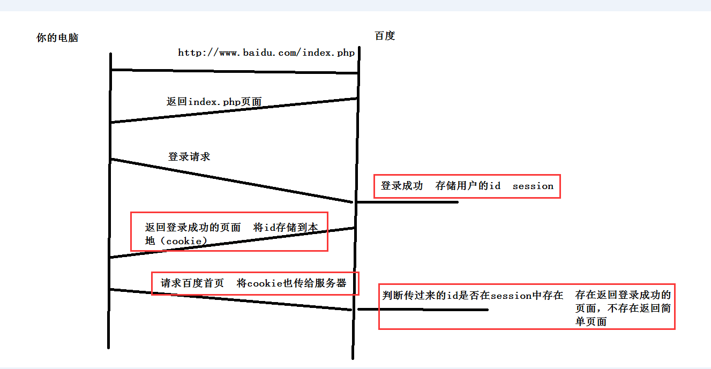

js-Cookie
作者： 千锋李文浩
时间： 17/01/26
通信协议
通信协议是指双方实体完成通信或服务所必须遵循的规则和约定
比如：地下党和总部采取密文传输 不通地区的人以普通话进行交流
TCP
传输控制协议,提供的是面向连接、可靠的字节流服务。当客户和服务器彼此交换数据前，必须先在双方之间建立一个TCP连接，之后才能传输数据。TCP提供超时重发，丢弃重复数据，检验数据，流量控制等功能，保证数据能从一端传到另一端。
TCP和打电话类似
双方说话之前需要一个人拨号 对方接听 然后通话 最后挂掉结束通话
建立TCP连接：3次握手
典型举例：魔兽世界
在别人电脑中放个大招把你干掉了，你这边瞬间漂移躲过去了。。。。游戏就没办法玩了
UDP
用户数据报协议，是一个简单的面向数据报的运输层协议。UDP不提供可靠性，它只是把应用程序传给IP层的数据报发送出去，但是并不能保证它们能到达目的地。由于UDP在传输数据报前不用在客户和服务器之间建立一个连接，且没有超时重发等机制，故而传输速度很快
UDP类似写信，信写好了就放进邮箱 至于对方能不能收到不关心
HTTP
超文本传输协议（HTTP，HyperText Transfer Protocol)是互联网上应用最为广泛的一种网络协议。
HTTP是一个客户端和服务器端请求和应答的标准（TCP）
弊端：每次请求服务器都会建立3次连接、身份确认，意味着用户每次都要登录，输入用户名和密码
Cookie（重）
1、某些网站为了辨别用户身份、进行 session 跟踪而储存在用户本地终端上的数据（通常经过加密）
2、也成为会话跟踪技术
3、Cookie 在计算机中是个存储在浏览器目录中的文本文件
Cookie来源

Cookie特点（重）
1、大小限制（不能超过4k）
2、每个域下cookie不能超过50个
3、有效期（和设定时间有关），过了有效期cookie会自动删除
4、cookie读取（一般哪个页面写入的哪个页面读取）
Cookie的读取(重)
document.cookie
读取的是所有的cookie
Cookie写入（重）
document.cookie = "cookie名=cookie值";
demo:
document.cookie = "username=pine";
带时间的cookie
document.cookie = "cookie名=cookie值;expires=存储时间"
存储时间为GMT时间，需要使用toGMTSting()方法转化 dete.toGMTString()
Cookie删除（重）
将存储时间设为过去时间即可
var date = new Date();
date.setDate(date.getDate()-1);//将时间设为前一天
date.setDate(date.gusername=pine+;expires='+date.toGMTString();
实战
1、一周免登陆
cookie的路径path

Cookie的读、写、删除封装（重）
1、封装readCookie(cookie名)，根据cookie名得到cookie值
demo： 假定cookie为 username=pine; phone=18200000000;
readCookie('username'); // 得到pine

2、封装setCookie(cookie名，cookie值，时间期限),写入cookie
demo：
setCookie('address','河南',365);//将地址存储365天

3、封装deleteCookie(cookie名),删除cookie

JSON对象（重）
1、将对象转化为json字符串 JSON.stringify(对象)
demo:
JSON.stringify( [1,2,3] ); // "[1,2,3]"
JSON.stingifyy( {name:pine} ); // "{name:pine}"
2、将json字符串转化为json对象 JSON.parse(json字符串);
JSON.parse( "{name:pine}" ); // {name:pine}
购物车应用（重）
一件商品有哪些信息？
商品编号： gid
商品名称： gname
商品价格: gprice
商品数量： gamount
购物车存储结构：
var cart = {
10001:{
gid: id,
gname: name,
gprice: price,
gamount: amount
},
10002:{
gid: id,
gname: name,
gprice: price,
gamount: amount
}
}
XSS攻击
脚本跨域攻击
在别人网站注入js代码，其他用户浏览时自动触发js执行，可以获取其他用户在网站的信息
预习
1、什么是正则表达式？
2、怎么创建正则表达式？
3、正则常用元字符
^ $
[]
\d \w
{n} {n,} {n,m}
* + ?
\s
\b